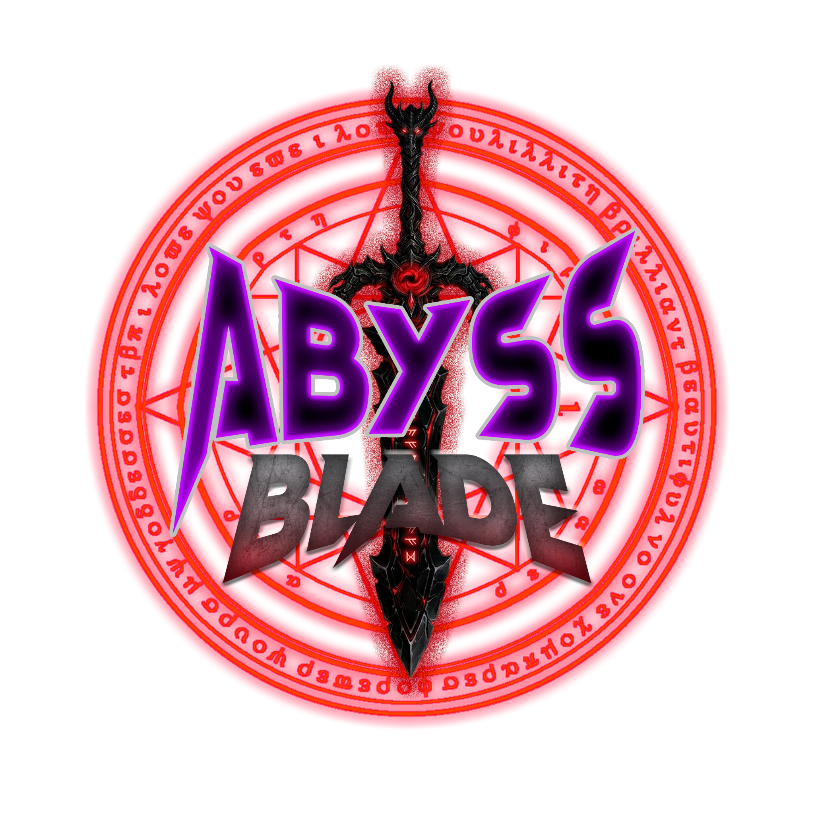

Exploración
Recorre el bosque y descubre cómo cambia después del hallazgo.

ABYSS BLADEAVENTURA 2D · EXPLORACIÓN · NARRATIVA
Tom encontró una espada.
Lo que despertó cambiará su camino.
Un proyecto de titulación en desarrollo
01 / EL HALLAZGO
En un bosque que parecía tranquilo, Tom encuentra la Espada del Abismo. Al tomarla, su entorno comienza a transformarse y surgen amenazas que antes permanecían ocultas.
Su viaje consiste en devolverla a su origen mientras intenta entender quién es y qué significa cargar con ese poder.
02 / LA EXPERIENCIA
Una aventura breve con historia lineal y una atmósfera oscura y melancólica.
Recorre el bosque y descubre cómo cambia después del hallazgo.
Enfrenta las amenazas del abismo con la espada que las despertó.
Acompaña a Tom en una historia sobre el poder y sus consecuencias.
03 / DENTRO DEL PROTOTIPO
Capturas de una versión de prueba.
Los gráficos pueden cambiar.
04 / TU PRIMER PASO
Explora una vista previa del recorrido y conoce los controles de la versión de escritorio.
La campaña se adapta a móvil y tablet. El videojuego se plantea para jugar con teclado en escritorio.
ANTES DE ENTRAR
Una aventura 2D de exploración y combate con narrativa lineal. El tono es oscuro y melancólico.
No. Abyss Blade es un proyecto de titulación en desarrollo. Esta página simula la campaña digital y la navegación hacia su demo.
Puedes explorar esta campaña desde tu celular y abrir la vista previa. El juego completo requiere controles de teclado en escritorio.
ARQUITECTURA / BAJA FIDELIDAD
Formas simples en escala de grises. Cada número identifica un componente, su función y su relación con la campaña.
Publicación 4:5. La firma identifica; la imagen introduce el mundo; la pregunta genera curiosidad; la acción lleva al sitio.
Banner horizontal. Firma y mensaje deben leerse de un vistazo. El botón conduce a la misma página para continuar el recorrido.
CAMPAÑA / PUNTOS DE CONTACTO
Simulaciones de una publicación social y un banner en contexto. Sus llamadas a la acción abren la página de campaña.
ESCENARIO 01 / REDES SOCIALES
Una persona encuentra la publicación desde su celular. Reconoce el logo, lee la pregunta y pulsa “Conoce Abyss Blade” para entrar al sitio.
La composición 4:5 conserva el nombre, la pregunta y el acceso dentro de la zona central. El botón funciona en esta simulación; no se conecta a una red social real.